HISTORY
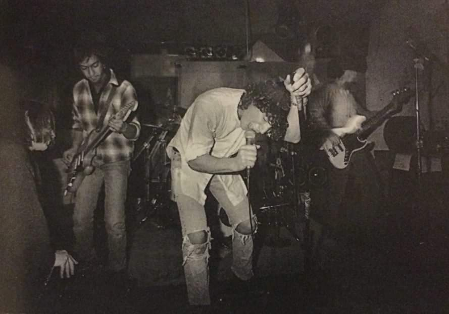
1984-1985:
Soundgarden formed with Chris Cornell (drums & vocals), Hiro Yamamoto (bass), Kim Thayil (guitar). Named after a wind pipe sculpture in Seattle. Scott Sundquist joined to play drums so Chris could focus on vocals. They did three recordings and played various concerts with this lineup.
1986-1988:
Chris Cornell’s then-girlfriend and future wife, Susan Silver became the manager, and Matt Cameron replaced Scott on drums. An impressed and famous DJ funded the release and creation of the label “Sub Pop” controlled by Kim’s roommate Bruce Pavitt. They released a banger single that stands the test of time “Nothing to Say”, later in the album “Screaming Life EP”. Their next EP was combined with the former and released together.
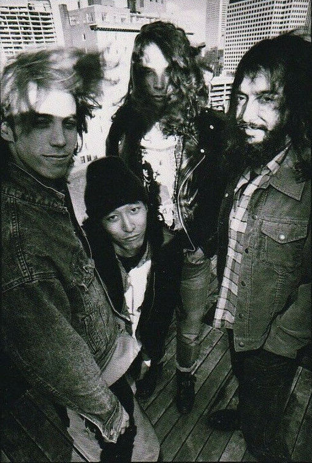
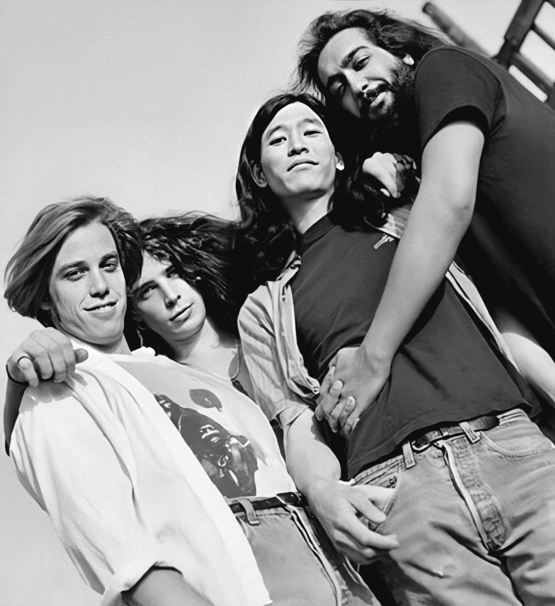
Ultramega OK Tour 1988-1990:
Chris Cornell’s then-girlfriend and future wife, Susan Silver became the manager, and Matt Cameron replaced Scott on drums. An impressed and famous DJ funded the release and creation of the label “Sub Pop” controlled by Kim’s roommate Bruce Pavitt. They released a banger single that stands the test of time “Nothing to Say”, later in the album “Screaming Life EP”. Their next EP was combined with the former and released together.
Ultramega OK Tour 1991:
Bassists swapped again with Ben Shepherd bringing them “fresh and creative” approaches to recording sessions. They say that he carried their development of the album Badmotorfinger. The best songs on the album are “Outshined” and “Holy water”. Earning grammy nominees again and some criticism from people who don’t understand depth. A song titled “Jesus Christ Pose” The depth being the surface, as it was to criticize public figures who act like they are being persecuted by portraying themself literally on a cross.
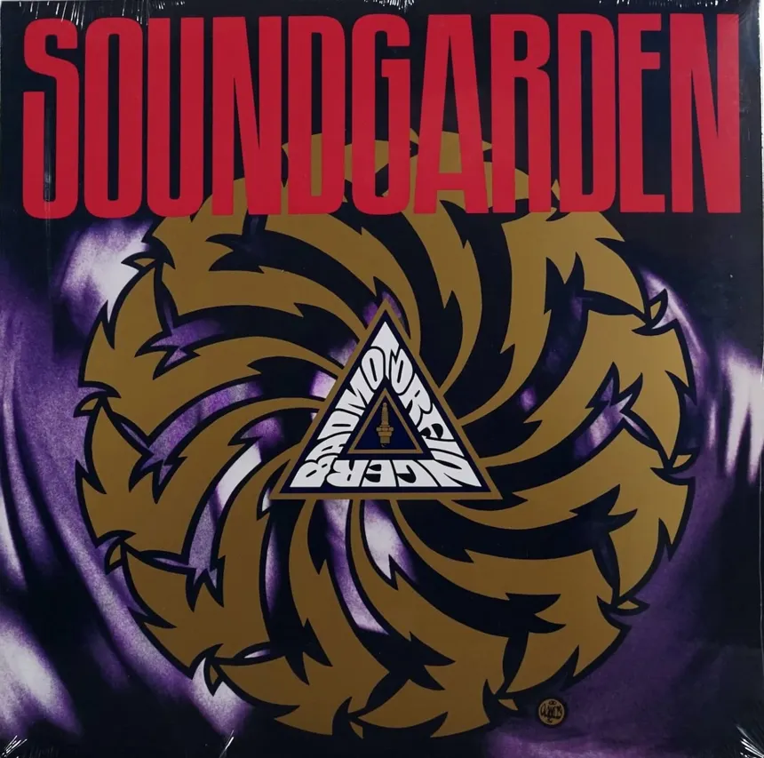
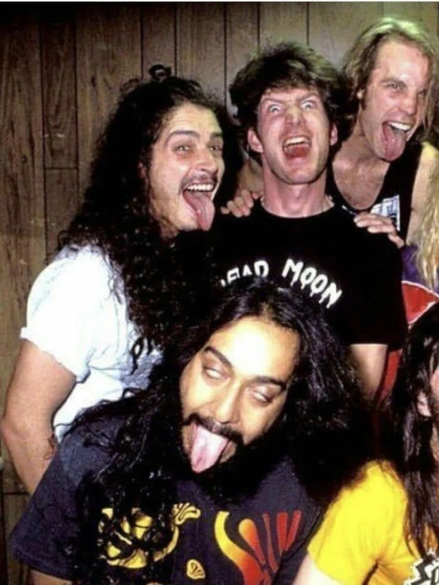
1991-1992 Tours "Slave to the Grind" & "Use Your Illusion"
Touring North America in October and November, 1991. Opening for Guns N’ Roses, and Skid Row on their tours. Again in North America tp Europe and back in 1992, in the “slave to the Grind” tour.
1993 lollapalooza tour
Touring with bands such as Red Hot Chili Peppers, and Peal Jam. They released a limited edition Badmotorfinger with “Satan-oscillate-my-metallic-sonatas” a palindrome, and a rewrite and cover of a black sabbath song, twisting it to have much more meaning and snazz “Into The Void(Sealth)”. Which was nominated for a good performance in 1993. At the paramount Theatre, videos were filmed and released in a compilation titled “Motorvision”.
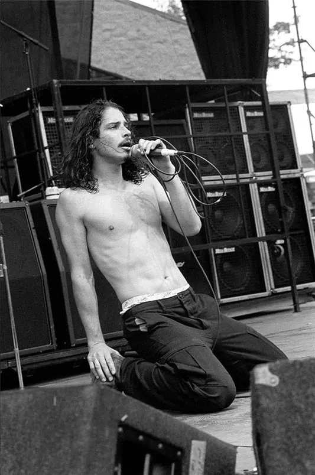
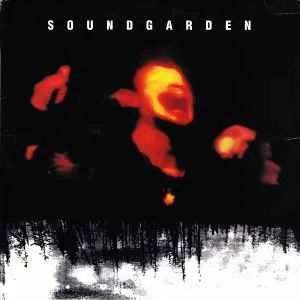
1994 Superunknown
The breakthrough album of the bands success. They were in the top 200 charts with several songs such as “Spoonman”,”The Day I Tried to Live”, “Black Hole Sun”, “My Wave” and “fell on Black Days”. I also love the songs “4th Of July” and “Mailman” on this album. Rolling Stone’s J.D.Considine said “Superunknown demonstrates far greater range than many bands manage in an entire career” and (paraphrased)”its more depressing then Nirvana's latest album”
1994 1995 tours
Touring Japan, Europe, and USA. Doctors who were fans were quick to warn Chris that his vocal chords would take permanent damage if he didn't take a break. "You wouldn't want to buy a ticket to hear a guy croak for two hours."
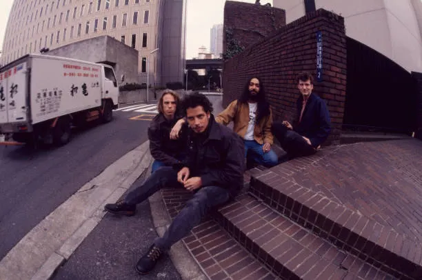
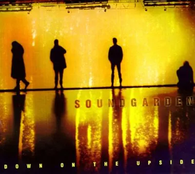
1996 Down on the upside
Chris Cornell and Kim had a falling out as it seems Kim wanted to have rock riffs and vibes in their new album. This explains that the album was very acoustic and country. It wasn’t as big as Superunknown but it still got a grammy nomination.
Lollapalooza with Metallica and then another world Tour 1996:
Already-existing tensions increased during it. When asked whether the band hated touring, Cornell replied: "We really enjoy it to a point, and then it gets tedious, because it becomes repetitious. You feel like fans have paid their money and they expect you to come out and play them your songs like the first time you ever played them. That's the point where we hate touring." Shepherd threw his bass after it failed during performing. This was the final performance of the band, and Chris Cornell soloed the rest of it.
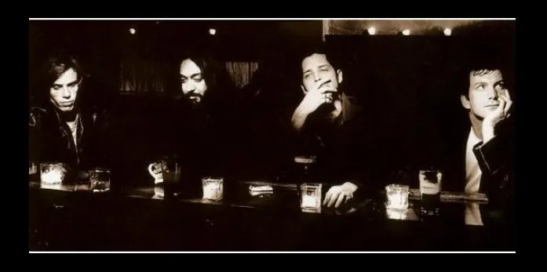
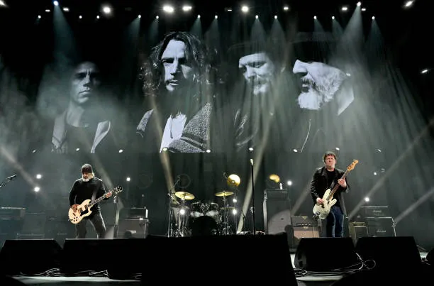
Reiunion and the rest 2010-present
They rereleased some songs and made a new one that went platinum release day and was in guitar hero. They made a new album “King Animal” and and released “Echo of Miles” a 3-CD box set.
November 8,2025
Rock and Roll Hall of Fame inducted Jim Carrey, who was a fan, gave the speech and the surviving members of the band were joined by original bassist Hiro Yamamoto for the first time in 36 years and performed a two song set.
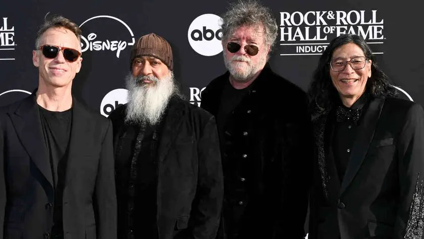